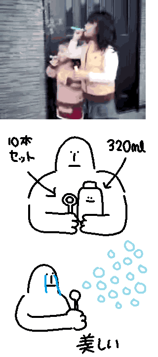

幼いころ、毎日のようにシャボン玉で遊んでいた。すぐ消えちゃうし、手元に残らないし、必ずシャボン液で手がベトベトになるにもかかわらず、楽しくて仕方がなかったのだ。
私がシャボン玉を吹きたいと言えば親がすぐ取り出してくれるほど、常に家に沢山買いだめされていた。

▲在りし日の5102(右)。ガラケー画質だ。
しかし物心がつき、学校に通うようになると、いつしかシャボン玉を吹きたいという気持ちすら湧かなくなり、自分の生活とはすっかり縁のないものになってしまった……。
そして時が流れ2026年。
最近、日本にようやく秋らしい秋が訪れて連日良く晴れるようになり、ベランダに出て軽く日光を浴びるのがとても気持ちいい。何か日光浴のお供になるものがあれば楽しそうだと考え、「こういう時こそシャボン玉が最適なんじゃないか」と思いついた。
というわけで、数年ぶりにシャボン玉を買ってみた。
▲吹き棒多すぎ。全部使いきれるだろうか？
Seriaで320mlの大容量ボトルを買った。これで当分楽しめるだろうと思ったが、あと5本くらい買ってもよかったなー。シャボン液は思ったよりもあっという間になくなる。
勢いよく息を吹けば小さいシャボン玉が沢山うまれ、ゆっくり弱い息を吹けば大きなシャボン玉ができる。これだよこれ、懐かしいな、と思いながら、田舎の秋空にシャボン玉をいくつも浮かべた。
▲私は疲れている可能性がある
超楽しい！！！！！泡が浮かんで消えていくだけなのに、異常に楽しいぞ。
遠くまで飛んで行くのを見るのが心地よくて、ついつい手が止まらなくなり、やめ時がわからない。
日光浴にもなるし、見た目も綺麗だし、眼精疲労にならないし、充電不要だし、ログイン不要だし、場所をとらないし、機材とか用意しなくていいし、騒音も出ないし、健康に悪影響がないし、最高だ！！！
大人こそシャボン玉を吹くべき層なのかもしれない。酒、たばこ、パチンコ、ゲーム、麻薬、もう時代遅れですよ。こんな手軽に安価に楽しめる真の娯楽があるのに、わざわざリスクを伴う娯楽に手を染める必要があるだろうか？
シャボン玉はすべてを解決する。会社に喫煙スペースがあるから、シャボン玉スペースも作ってほしい。休憩時間にシャボン玉を吹くと最高の気分転換になるだろう。
2026/10/08